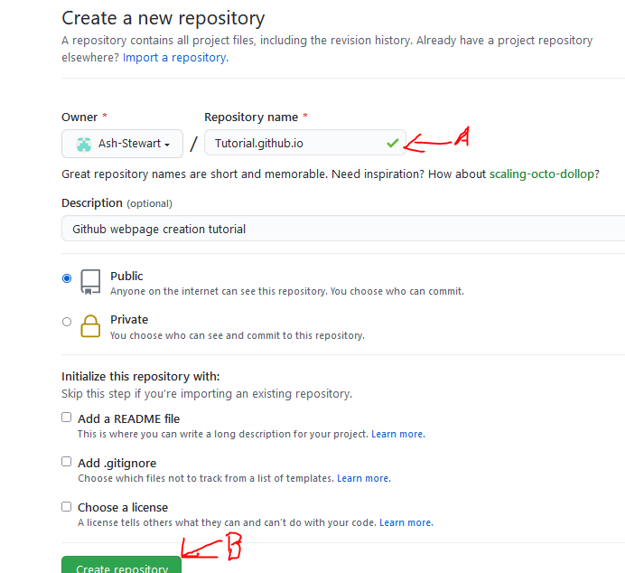
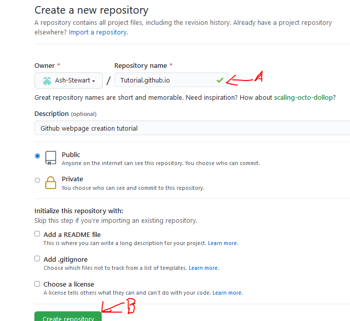

Step 1: download Visual Studio Editor
A) After downloading VS, click on the open folder(1) link to choose a folder to work in

1A) After you choose which folder(2) you will be working in, you will need to create an html file.

2A) To create this file you will have to press the create file button(1) and then name this file "index.html"
This file will be where you will add your code for your webpage.
Step 1: You will need to create an account with Github if you have not already.
1a) After completing this, you will need to go to your profile and click the "repositories" tab and then select the "New" option on the right
 You will then be brought to this page:

You will then be brought to this page:

Step 2: On this page, you will have to type a username (A) in the following format: username.github.io
Once you click on the button "create" at the bottom of the page, you will be redirected to this page:


After uploading these files you will be able to visit your webpage by entering your repository name (username.github.io) into the address bar!
Enjoy!